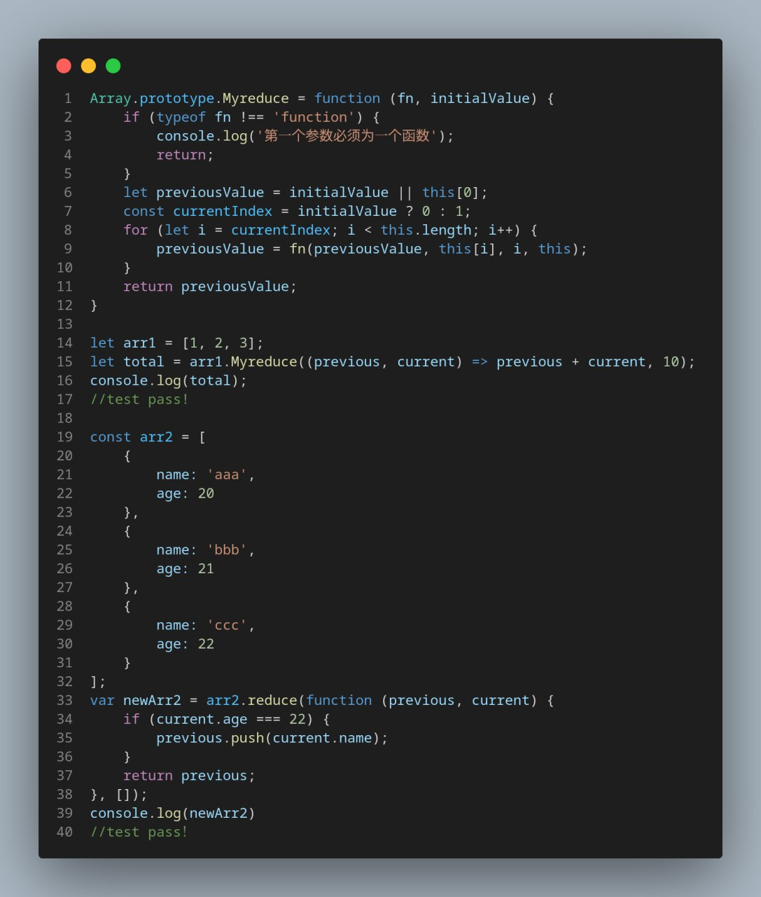

用reduce实现map
用reduce实现map
Array.map
用法
1 | |
如果 thisArg 参数提供给map，则会被用作回调函数的this值。否则 undefined 会被用作回调函数的this值。
参数
-
callback生成新数组元素的函数，使用三个参数：
currentValue为callback数组中正在处理的当前元素。index（可选）callback数组中正在处理的当前元素的索引。array（可选）map方法调用的数组。 -
thisArg（可选）执行
callback函数时值被用作this。
Array.prototype.Mymap()
1 | |
手写reduce
array.reduce()
用法
1 | |
参数
-
callbackFn一个 “reducer” 函数，包含四个参数：
-
previousValue：上一次调用callbackFn时的返回值。在第一次调用时，若指定了初始值initialValue，其值则为initialValue，否则为数组索引为 0 的元素array[0]。 -
currentValue：数组中正在处理的元素。在第一次调用时，若指定了初始值initialValue，其值则为数组索引为 0 的元素array[0]，否则为array[1] -
currentIndex：数组中正在处理的元素的索引。若指定了初始值initialValue，则起始索引号为 0，否则从索引 1 起始。 -
array：用于遍历的数组。
-
-
initialValue（可选）作为第一次调用
callback函数时参数 previousValue 的值。若指定了初始值initialValue，则currentValue则将使用数组第一个元素；否则previousValue将使用数组第一个元素，而currentValue将使用数组第二个元素。
Myreduce()
代码
1 | |
测试结果

本博客所有文章除特别声明外，均采用 CC BY-SA 4.0 协议 ，转载请注明出处！